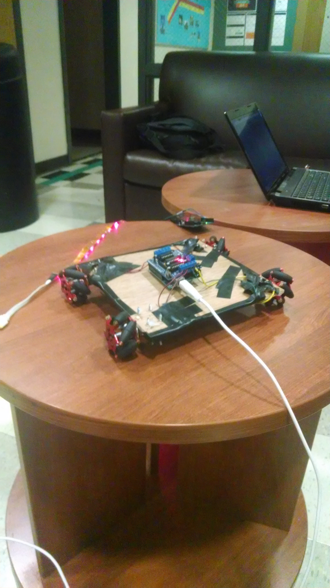
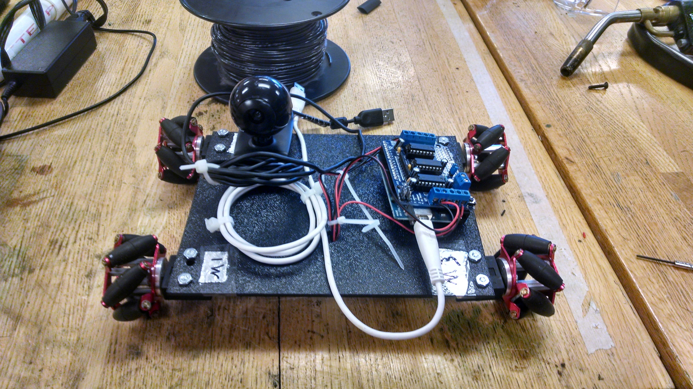

SortME V1
SortME V1 uses the following parts. 4 sparkfun mecanum wheels, 1 Arduino UNO Rev 3 and 1 adafruit motor shield.
Here is a picture of the current working roboSort V1
please look below to see some videos of SortME v1 chassis on the move!
If videos do not play please reference our youtube channel here
SortME V2
Out with the old in with the new! Say Hello to SortME V2!
Look below to see SortME V2 driving in response to what it sees using its camera. In this case it is looking for a white rectangles. SortME V2 then moves respectivly to center itself.